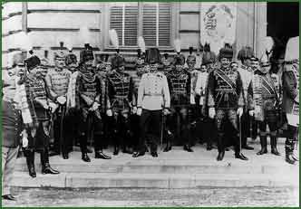

General Samu Hazai with the Hungarian General Staff at the St. Stephan's Day procession in the Buda Castle. Samu Hazai (Sámuel Kohn) was minister of defense between 1910 and 1917. He was also given the title of baron.